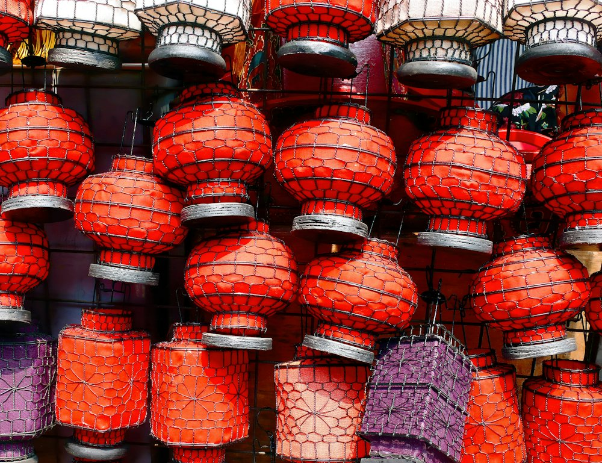

节庆历年规律华北
北京地坛春节庙会
Ditan Temple Fair · 北京 · 东城
最佳时间
正月初一至初五（2027 年约 2 月 6 – 10 日）
春节假期固定举办，具体档期以公园公告为准。
老北京年味最浓的庙会：仿清祭地表演、京味小吃与非遗摊位挤满地坛。
不能错过
- 初一至初三有仿清祭地仪仗表演，早去占前排
- 京城小吃集中：茶汤、灌肠、糖葫芦一路吃过去
旅人提醒
- 初一初二人流最大，建议上午早段入场
- 地铁 2 号线雍和宫站步行可达，尽量别开车
月度热力与气温
2°
1
5°
2
12°
3
20°
4
26°
5
32°
6
31°
7
30°
8
26°
9
19°
10
10°
11
4°
12
适宜度（柱高，5=最佳）依据活动窗口与气候整理；气温为月均高温近似值（°C），仅供规划参考，出行前请查当地预报。
编辑核实笔记 · 整理自地坛公园历年公告，非亲历；档期以官方发布为准。
预订 / 官网
官方页面：查看官网 / 官方信息 ↗ · 票价与预约以官网为准
联盟链接含占位 tracking id（Booking/Klook/Trip.com），上线替换为真实 ID 即生效；均带 utm 参数与点击统计。